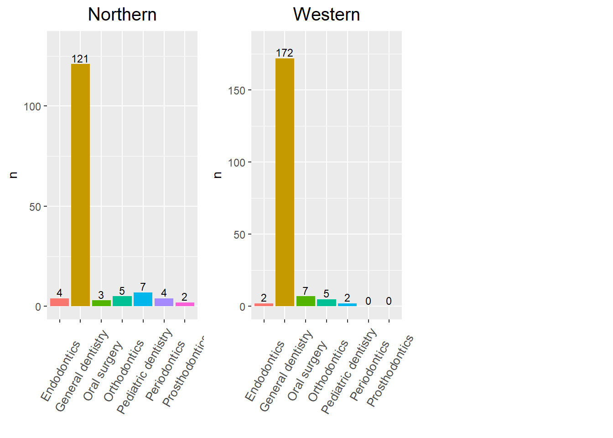

Last updated: 2025-04-24
Checks: 6 1
Knit directory: WI_Dental_Survey/
This reproducible R Markdown analysis was created with workflowr (version 1.7.1). The Checks tab describes the reproducibility checks that were applied when the results were created. The Past versions tab lists the development history.
The R Markdown file has unstaged changes. To know which version of
the R Markdown file created these results, you’ll want to first commit
it to the Git repo. If you’re still working on the analysis, you can
ignore this warning. When you’re finished, you can run
wflow_publish to commit the R Markdown file and build the
HTML.
Great job! The global environment was empty. Objects defined in the global environment can affect the analysis in your R Markdown file in unknown ways. For reproduciblity it’s best to always run the code in an empty environment.
The command set.seed(20250423) was run prior to running
the code in the R Markdown file. Setting a seed ensures that any results
that rely on randomness, e.g. subsampling or permutations, are
reproducible.
Great job! Recording the operating system, R version, and package versions is critical for reproducibility.
Nice! There were no cached chunks for this analysis, so you can be confident that you successfully produced the results during this run.
Great job! Using relative paths to the files within your workflowr project makes it easier to run your code on other machines.
Great! You are using Git for version control. Tracking code development and connecting the code version to the results is critical for reproducibility.
The results in this page were generated with repository version 05d3575. See the Past versions tab to see a history of the changes made to the R Markdown and HTML files.
Note that you need to be careful to ensure that all relevant files for
the analysis have been committed to Git prior to generating the results
(you can use wflow_publish or
wflow_git_commit). workflowr only checks the R Markdown
file, but you know if there are other scripts or data files that it
depends on. Below is the status of the Git repository when the results
were generated:
Ignored files:
Ignored: .Rhistory
Ignored: analysis/figure/
Unstaged changes:
Modified: analysis/2024_0701_survey_part3.Rmd
Modified: analysis/2024_0701_survey_part3_02_geographicaldistribution.Rmd
Modified: analysis/2024_0701_survry_part3_01_racevsothers.Rmd
Modified: analysis/index.Rmd
Note that any generated files, e.g. HTML, png, CSS, etc., are not included in this status report because it is ok for generated content to have uncommitted changes.
These are the previous versions of the repository in which changes were
made to the R Markdown
(analysis/2024_0701_survey_part3_02_geographicaldistribution.Rmd)
and HTML
(docs/2024_0701_survey_part3_02_geographicaldistribution.html)
files. If you’ve configured a remote Git repository (see
?wflow_git_remote), click on the hyperlinks in the table
below to view the files as they were in that past version.
| File | Version | Author | Date | Message |
|---|---|---|---|---|
| Rmd | 05d3575 | han | 2025-04-23 | 4/23/2025 |
#Dentist_Survey=multiplesheets(file.path(root, "....\\AllCollaboration\\2024\\202407\\state_survey\\Dentist Survey.xlsx"))
Dentist_Survey=multiplesheets("C:\\Shengtong\\Research\\AllCollaboration\\2024\\202407\\state_survey\\Dentist Survey.xlsx")
Dentist_in_WI=Dentist_Survey$`Dentist Survey` %>% filter(`direct care as a dentist in Wisconsin`=="Yes")
#save(Dentist_in_WI, file="C:\\Shengtong\\Research\\AllCollaboration\\2024\\202407\\Dentist_in_WI.RData")direct care as a dentist in Wisconsinroot <- rprojroot::find_rstudio_root_file()
load(file.path(root,"..\\..\\AllCollaboration\\2024\\202407\\Dentist_in_WI.RData"))
variables=colnames(Dentist_in_WI)
#data.frame(questions=variables)%>%
#datatable(extensions = 'Buttons',
# caption = "",
# options = list(dom = 'Blfrtip',
# buttons = c('copy', 'csv', 'excel', 'pdf', 'print'),
# lengthMenu = list(c(10,25,50,-1),
# c(10,25,50,"All"))))
cat("total number of dentists: ", nrow(Dentist_in_WI), "\n")total number of dentists: 2295 variables_of_interest=variables[-c(6,7,19:37)]
dentist_in_WI_of_interest=Dentist_in_WI[,-c(6,7,19:37)]
num_non_missing=apply(dentist_in_WI_of_interest,2, function(x) sum(is.na(x)==F) )
#data.frame(variable=variables_of_interest, non_missing=num_non_missing)%>%
#datatable(extensions = 'Buttons',
# caption = " Interesting variables with non-missing numbers ",
# options = list(dom = 'Blfrtip',
# buttons = c('copy', 'csv', 'excel', 'pdf', 'print'),
# lengthMenu = list(c(10,25,50,-1),
# c(10,25,50,"All"))))
date_of_birth=dentist_in_WI_of_interest$`Date of Birth`
year_of_birth=str_sub(date_of_birth, nchar(date_of_birth)-3, nchar(date_of_birth))
ages=2025-as.numeric(year_of_birth)
dentist_in_WI_of_interest1=dentist_in_WI_of_interest %>% mutate(ages=ages)wisconsin_urban_rural_zip=multiplesheets("C:\\Shengtong\\Research\\OralPublicHealth\\Dental_Emergency_visit\\Wisconsin-Urban-Rural-zip.xlsx")region_code=unique(wisconsin_urban_rural_zip$`Table 1`$`2014 ZCTA-based WURC Code`)
all_code=wisconsin_urban_rural_zip$`Table 1`$`2014 ZCTA-based WURC Code`
all_code[which(all_code=="R2/R1")]="R2" # rename regions
all_code[which(all_code=="Urban/R1")]="Urban"
all_code[which(all_code=="Metro W-O-W/R1")]="Metro W-O-W"
all_code[which(all_code=="R3/R1")]="R3"
all_code[which(all_code=="R3/R2/R1")]="R3"
all_code[which(all_code=="Urban/R2")]="Urban"
all_code[which(all_code=="R1/Urban")]="R1"
wisconsin_urban_rural_zip_data=wisconsin_urban_rural_zip$`Table 1` %>% mutate(new_region_code=all_code)
region_code_update=unique(all_code)region_code_zip=sapply(region_code_update, function(x) wisconsin_urban_rural_zip_data %>% filter(new_region_code==x) %>% select(`ZCTA/\r\nZIPCode`)) # extract zip codes
# extract the first 5 digits if not NA and leave it otherwise
dentist_in_WI_of_interest1$`5-digit Zip code` <- ifelse(
is.na(dentist_in_WI_of_interest1$`5-digit Zip code`),
NA,
substr(dentist_in_WI_of_interest1$`5-digit Zip code`, 1, 5)
)
dentist_zip=unique(dentist_in_WI_of_interest1 %>% select(`5-digit Zip code` ) %>% pull)
#sum(is.na(Dentist_Survey_zipcode)==T) 893 zip codes are missing
zip_in_dentist_only=setdiff(dentist_zip, unlist(region_code_zip)) #### zip codes in the survey, but not in Wisconsin urban rural zip data
#dentist_in_WI_of_interest1 %>% filter(`5-digit Zip code` %in% zip_in_dentist_only)%>% filter(`Gender Identity`=="Man" | `Gender Identity`=="Woman") %>% nrow() # these 886 man/woman in the survey, but missed in wisconsin urban/rural data
#data.frame(zip_in_dentist_only)%>%
#datatable(extensions = 'Buttons',
# caption = " Zip codes in the survey, but not in Wisconsin zip code list",
# options = list(dom = 'Blfrtip',
# buttons = c('copy', 'csv', 'excel', 'pdf', 'print'),
# lengthMenu = list(c(10,25,50,-1),
# c(10,25,50,"All"))))53574-8881, but
Wisconsin zip code don’t have sub-code.dentist_in_WI_of_interest1 %>% filter (!`5-digit Zip code` %in% as.character(unlist(region_code_zip))) %>% select(`5-digit Zip code`, City, State, `direct care as a dentist in Wisconsin`) %>% # dentist whose zip code can't be mapped to WI zip code list
datatable(extensions = 'Buttons',
caption = "",
options = list(dom = 'Blfrtip',
buttons = c('copy', 'csv', 'excel', 'pdf', 'print'),
lengthMenu = list(c(10,25,50,-1),
c(10,25,50,"All"))))gender_geo=sapply(region_code_zip, function(x) dentist_in_WI_of_interest1 %>% filter(`5-digit Zip code` %in% x) %>% select(`Gender Identity`))
gender_prop=sapply(gender_geo, function(x) c(sum(x=="Man", na.rm=T), sum(x=="Woman", na.rm=T)))
gender_geo_data=data.frame(geo=rep(region_code_update,each=2), n=as.vector(gender_prop), gender=rep(c("Man", "Woman"), length(region_code_update))) %>% drop_na()
man_total=sum(gender_geo_data %>% filter(gender=="Man") %>% select(n) %>% pull())
woman_total=sum(gender_geo_data %>% filter(gender=="Woman") %>% select(n) %>% pull())
prop=numeric()
prop[seq(1,11,by=2)]=gender_geo_data$n[seq(1,11,by=2)]/man_total
prop[seq(2,12,by=2)]=gender_geo_data$n[seq(2,12,by=2)]/woman_total
gender_geo_data=gender_geo_data %>% mutate(prop=round(prop,4))
fig=side_by_side_barplot(gender_geo_data, angle=10, num_size = 2.5, x_text_size=12, legend_text_size=12, title="Dentist_Survey", custom_colors= c("Woman" = "red", "Man" = "green"))
figfig=side_by_side_barplot3(gender_geo_data, angle=10, num_size = 2.5, x_text_size=12, legend_text_size=12, title="Dentist_Survey", custom_colors= c("Woman" = "red", "Man" = "green"), x_var="geo", fill_var = "gender")
figgender_geo_data%>%
datatable(extensions = 'Buttons',
caption = "Dentist",
options = list(dom = 'Blfrtip',
buttons = c('copy', 'csv', 'excel', 'pdf', 'print'),
lengthMenu = list(c(10,25,50,-1),
c(10,25,50,"All"))))chisq.test(data.frame(man=gender_geo_data %>% filter(gender=="Man") %>% select(n) %>% pull(), woman=gender_geo_data %>% filter(gender=="Woman") %>% select(n) %>% pull()))
Pearson's Chi-squared test
data: data.frame(man = gender_geo_data %>% filter(gender == "Man") %>% select(n) %>% pull(), woman = gender_geo_data %>% filter(gender == "Woman") %>% select(n) %>% pull())
X-squared = 1.2211, df = 5, p-value = 0.9428cat("total man or woman dentists: ", sum(gender_geo_data$n), "\n")total man or woman dentists: 1959 specialty=c("General dentistry", "Endodontics", "Orthodontics","Periodontics", "Prosthodontics", "Pediatric dentistry", "Oral surgery")
specialty_geo=sapply(region_code_zip, function(x) dentist_in_WI_of_interest1 %>% filter(`5-digit Zip code` %in% x) %>% filter(`Dental Specialties Board Certified` %in% specialty) %>% select(`Dental Specialties Board Certified`))
specialty_prop=sapply(specialty_geo, function(x) c(sum(x=="General dentistry"), sum(x=="Endodontics"), sum(x=="Orthodontics"), sum(x=="Periodontics"), sum(x=="Prosthodontics"), sum(x=="Pediatric dentistry"), sum(x=="Oral surgery")))
specialty_geo_data=data.frame(geo=rep(region_code_update,each=length(specialty)), num=as.vector(specialty_prop), spect=rep(specialty, length(region_code_update))) %>% drop_na()
# Function to create bar plots
create_bar_plot <- function(region) {
data <- specialty_geo_data %>% filter(geo == region)
max_y <- max(data$num) + 10
ggplot(data, aes(x = spect, y = num, fill = spect)) +
geom_bar(position = "dodge", stat = "identity") +
ylim(0, max_y) +
ylab("n") +
xlab("") +
theme(legend.position = "") +
theme(axis.text.x = element_text(angle = 90, vjust = 0.5, size = 7)) +
geom_text(aes(label = num), position = position_dodge(width = 0.9), vjust = -0.25, size = 3) +
ggtitle(region) +
theme(plot.title = element_text(hjust = 0.5, size = 15))
}
# Generate bar plots for all regions
figures <- map(region_code_update, create_bar_plot)
# Arrange the plots in a grid
ggarrange(plotlist = figures, ncol = 3)$`1`
$`2`
attr(,"class")
[1] "list" "ggarrange"variables_of_interest=variables[-c(6,7,19:37)]
dentist_in_WI_of_interest=Dentist_in_WI[,-c(6,7,19:37)]
num_non_missing=apply(dentist_in_WI_of_interest,2, function(x) sum(is.na(x)==F) )
#data.frame(variable=variables_of_interest, non_missing=num_non_missing)%>%
#datatable(extensions = 'Buttons',
# caption = " Interesting variables with non-missing numbers ",
# options = list(dom = 'Blfrtip',
# buttons = c('copy', 'csv', 'excel', 'pdf', 'print'),
# lengthMenu = list(c(10,25,50,-1),
# c(10,25,50,"All"))))
date_of_birth=dentist_in_WI_of_interest$`Date of Birth`
year_of_birth=str_sub(date_of_birth, nchar(date_of_birth)-3, nchar(date_of_birth))
ages=2024-as.numeric(year_of_birth)
dentist_in_WI_of_interest1=dentist_in_WI_of_interest %>% mutate(ages=ages)
#zip_code_details=multiplesheets("C:\\Shengtong\\Research\\AllCollaboration\\2024\\202407\\state_survey\\ZIP code details.xlsx")
# Assign the columns to new objects in the environment
#zip_codes_and_counties <- zip_code_details$`ZIP codes and counties`
#dhs_zones <- zip_code_details$`dhs_zone`
# Save the objects
#save(zip_codes_and_counties, dhs_zones, file = file.path(root, "..\\2024\\202407\\zip_code_details.RData"))
load(file.path(root, "..\\..\\AllCollaboration\\2024\\202407\\zip_code_details.RData"))
zip_code_county_zone=zip_codes_and_counties %>% left_join(dhs_zones, by="county")
zip_code_county_zone$zip_code=as.character(zip_code_county_zone$zip_code)
dentist_in_WI_of_interest1 =dentist_in_WI_of_interest1%>% mutate(zip_code = dentist_in_WI_of_interest1$`5-digit Zip code`)
dentist_in_WI_of_interest1=dentist_in_WI_of_interest1 %>% left_join(zip_code_county_zone, by="zip_code")
sum(!is.na(dentist_in_WI_of_interest1$zone)) # 1764 dentists mapped
#dentist_in_WI_of_interest1=dentist_in_WI_of_interest1 %>% left_join(zip_code_county_zone, by="city")
#sum(!is.na(dentist_in_WI_of_interest1$zone.x))
#sum(!is.na(dentist_in_WI_of_interest1$zone.y))zones=unique(dentist_in_WI_of_interest1$zone)
zones=zones[is.na(zones)==F]
gender_zones=sapply(zones, function(x) dentist_in_WI_of_interest1 %>% filter(zone %in% x) %>% select(`Gender Identity`))
gender_prop=sapply(gender_zones, function(x) c(sum(x=="Man", na.rm=T), sum(x=="Woman", na.rm=T)))
gender_zones_data=data.frame(geo=rep(zones,each=2), n=as.vector(gender_prop), gender=rep(c("Man", "Woman"), length(zones))) %>% drop_na()
man_total=sum(gender_zones_data %>% filter(gender=="Man") %>% select(n) %>% pull())
woman_total=sum(gender_zones_data %>% filter(gender=="Woman") %>% select(n) %>% pull())
prop=numeric()
prop[seq(1,9,by=2)]=gender_zones_data$n[seq(1,11,by=2)]/man_total
prop[seq(2,10,by=2)]=gender_zones_data$n[seq(2,12,by=2)]/woman_total
gender_zones_data=gender_zones_data %>% mutate(prop=round(prop,4))
fig=side_by_side_barplot(gender_zones_data, angle=0, num_size = 3, x_text_size=12, legend_text_size=12, title="Dentist_Survey", custom_colors= c("Woman" = "red", "Man" = "green"))
figfig=side_by_side_barplot3(gender_zones_data, angle=0, num_size = 3, x_text_size=12, legend_text_size=12, title="Dentist_Survey", custom_colors= c("Woman" = "red", "Man" = "green"), x_var="geo", fill_var = "gender")
figgender_zones_data%>%
datatable(extensions = 'Buttons',
caption = "Dentist",
options = list(dom = 'Blfrtip',
buttons = c('copy', 'csv', 'excel', 'pdf', 'print'),
lengthMenu = list(c(10,25,50,-1),
c(10,25,50,"All"))))chisq.test(data.frame(man=gender_zones_data %>% filter(gender=="Man") %>% select(n) %>% pull(), woman=gender_zones_data %>% filter(gender=="Woman") %>% select(n) %>% pull()))
Pearson's Chi-squared test
data: data.frame(man = gender_zones_data %>% filter(gender == "Man") %>% select(n) %>% pull(), woman = gender_zones_data %>% filter(gender == "Woman") %>% select(n) %>% pull())
X-squared = 7.259, df = 4, p-value = 0.1228cat("total dentists mapped to zones: ", sum(gender_zones_data$n), "\n")total dentists mapped to zones: 1696 specialty=c("General dentistry", "Endodontics", "Orthodontics","Periodontics", "Prosthodontics", "Pediatric dentistry", "Oral surgery")
specialty_zones=sapply(zones, function(x) dentist_in_WI_of_interest1 %>% filter(zone %in% x) %>% filter(`Dental Specialties Board Certified` %in% specialty) %>% select(`Dental Specialties Board Certified`))
specialty_prop=sapply(specialty_zones, function(x) c(sum(x=="General dentistry"), sum(x=="Endodontics"), sum(x=="Orthodontics"), sum(x=="Periodontics"), sum(x=="Prosthodontics"), sum(x=="Pediatric dentistry"), sum(x=="Oral surgery")))
specialty_zones_data=data.frame(geo=rep(zones,each=length(specialty)), num=as.vector(specialty_prop), spect=rep(specialty, length(zones))) %>% drop_na()
# Function to create bar plots
create_bar_plot <- function(region) {
data <- specialty_zones_data %>% filter(geo == region)
max_y <- max(data$num) + 10
ggplot(data, aes(x = spect, y = num, fill = spect)) +
geom_bar(position = "dodge", stat = "identity") +
ylim(0, max_y) +
ylab("n") +
xlab("") +
theme(legend.position = "") +
theme(axis.text.x = element_text(angle = 60, vjust = 0.5, size = 10)) +
geom_text(aes(label = num), position = position_dodge(width = 0.9), vjust = -0.25, size = 3) +
ggtitle(region) +
theme(plot.title = element_text(hjust = 0.5, size = 15))
}
# Generate bar plots for all regions
figures <- map(zones, create_bar_plot)
# Arrange the plots in a grid
ggarrange(plotlist = figures, ncol = 3)$`1`
$`2`
attr(,"class")
[1] "list" "ggarrange"zones=unique(dentist_in_WI_of_interest1$zone)
zones=zones[is.na(zones)==F]
age_zones=sapply(zones, function(x) dentist_in_WI_of_interest1 %>% filter(zone %in% x) %>% select(ages))
count_age=function(ages)
{
age_groups=paste(seq(1:5), c("<40", "40-50", "50-60", "60-70", ">70"), sep=":")
age_groups_count=numeric(length(age_groups))
age_groups_count[1]=sum(ages<40)
age_groups_count[2]=sum(ages>=40 & ages<50)
age_groups_count[3]=sum(ages>=50 & ages<60)
age_groups_count[4]=sum(ages>=60 & ages<70)
age_groups_count[5]=sum(ages>=70)
return(data.frame(age_groups=age_groups, count=age_groups_count))
}
age_zones_groups=lapply(age_zones, count_age)
combined_age_groups = do.call(rbind, age_zones_groups)
combined_age_groups$zone <- rep(zones, each = 5)
# Calculate proportions within each age group
combined_age_groups <- combined_age_groups %>%
group_by(age_groups) %>%
mutate(proportion = count / sum(count),
label = paste0(count, " (", round(proportion * 100, 1), "%)"))
# Plot
ggplot(combined_age_groups, aes(x = zone, y = count, fill = age_groups)) +
geom_bar(stat = "identity", position = position_dodge(width = 0.9)) +
geom_text(aes(label = label),
position = position_dodge(width = 0.9),
vjust = -0.3, size = 2) +
labs(title = "Age Group Distribution by Zone",
x = "", y = "n",
fill = "Age Group") +
theme(legend.position="bottom")+
theme(axis.text.x = element_text(angle = 0, hjust = 0.5, size = 12))+
theme(plot.title = element_text(hjust = 0.5, size=15)) #center the title
sessionInfo()R version 4.3.2 (2023-10-31 ucrt)
Platform: x86_64-w64-mingw32/x64 (64-bit)
Running under: Windows 10 x64 (build 19045)
Matrix products: default
locale:
[1] LC_COLLATE=English_United States.utf8
[2] LC_CTYPE=English_United States.utf8
[3] LC_MONETARY=English_United States.utf8
[4] LC_NUMERIC=C
[5] LC_TIME=English_United States.utf8
time zone: America/Chicago
tzcode source: internal
attached base packages:
[1] grid stats graphics grDevices utils datasets methods
[8] base
other attached packages:
[1] VennDiagram_1.7.3 futile.logger_1.4.3 condsurv_1.0.0
[4] devtools_2.4.5 usethis_3.1.0 tidycmprsk_1.1.0
[7] gtsummary_2.0.4 ggsurvfit_1.1.0 irr_0.84.1
[10] lpSolve_5.6.23 readxl_1.4.3 cowplot_1.1.3
[13] matrixStats_1.5.0 gridExtra_2.3 DT_0.33
[16] rstatix_0.7.2 ggpubr_0.6.0 kableExtra_1.4.0
[19] lubridate_1.9.4 forcats_1.0.0 stringr_1.5.1
[22] dplyr_1.1.4 purrr_1.0.2 readr_2.1.4
[25] tidyr_1.3.1 tibble_3.2.1 ggplot2_3.5.1
[28] tidyverse_2.0.0 rprojroot_2.0.4
loaded via a namespace (and not attached):
[1] formatR_1.14 remotes_2.5.0 rlang_1.1.2
[4] magrittr_2.0.3 git2r_0.35.0 compiler_4.3.2
[7] systemfonts_1.2.1 vctrs_0.6.5 profvis_0.4.0
[10] pkgconfig_2.0.3 fastmap_1.2.0 backports_1.5.0
[13] ellipsis_0.3.2 labeling_0.4.3 promises_1.3.2
[16] rmarkdown_2.29 sessioninfo_1.2.2 tzdb_0.4.0
[19] xfun_0.50.6 cachem_1.1.0 jsonlite_1.8.9
[22] later_1.4.1 broom_1.0.7 R6_2.5.1
[25] bslib_0.9.0 stringi_1.8.3 car_3.1-3
[28] pkgload_1.4.0 jquerylib_0.1.4 cellranger_1.1.0
[31] Rcpp_1.0.11 knitr_1.49 httpuv_1.6.15
[34] Matrix_1.6-1.1 splines_4.3.2 timechange_0.3.0
[37] tidyselect_1.2.1 rstudioapi_0.17.1 abind_1.4-8
[40] yaml_2.3.8 miniUI_0.1.1.1 pkgbuild_1.4.6
[43] lattice_0.21-9 shiny_1.10.0 withr_3.0.2
[46] evaluate_1.0.3 lambda.r_1.2.4 survival_3.8-3
[49] urlchecker_1.0.1 xml2_1.3.6 pillar_1.10.1
[52] carData_3.0-5 whisker_0.4.1 generics_0.1.3
[55] hms_1.1.3 munsell_0.5.1 scales_1.3.0
[58] xtable_1.8-4 glue_1.8.0 tools_4.3.2
[61] ggsignif_0.6.4 fs_1.6.5 crosstalk_1.2.1
[64] colorspace_2.1-0 Formula_1.2-5 cli_3.6.2
[67] workflowr_1.7.1 futile.options_1.0.1 viridisLite_0.4.2
[70] svglite_2.1.3 gtable_0.3.6 sass_0.4.9
[73] digest_0.6.33 farver_2.1.2 htmlwidgets_1.6.4
[76] memoise_2.0.1 htmltools_0.5.8.1 lifecycle_1.0.4
[79] mime_0.12